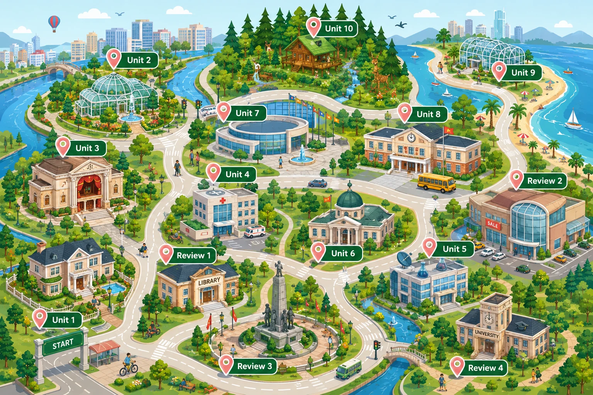

Unit 1 · Family Life Unit 2 · Humans and the Environment Unit 3 · Music Unit 4 · For a Better Community Unit 5 · Inventions Unit 6 · Gender Equality Unit 7 · Viet Nam and International Organisations Unit 8 · New Ways to Learn Unit 9 · Protecting the Environment Unit 10 · Ecotourism Review 1 — chưa có bài giảng Review 2 — chưa có bài giảng Review 3 — chưa có bài giảng Review 4 — chưa có bài giảngBấm vào ghim để mở bài giảng ngay trên bản đồ — không rời trang, đóng lại là về đúng chỗ cũ. Cả 10 unit đã có bản đồ; bốn ghim Review còn mờ vì chưa dựng. Trong bài giảng: ← → chuyển slide · F toàn màn hình · A hiện đáp án · Esc lùi một bậc.